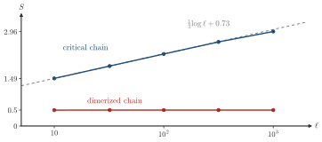
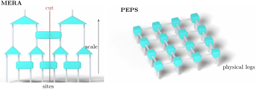

Advanced Quantum Materials 2027 · All lectures · Lecture notes
Session 7. Quantum Many-Body Entanglement and Tensor Networks
7.11 MERA and PEPS beyond MPS
What network describes a critical chain, whose entropy does not saturate, and what network describes a lattice in two dimensions? We will now see that MERA can hold the slow logarithmic growth of the entropy at a critical point. PEPS put one tensor on every site of a 2D lattice, and the price is a contraction that is hard.
\[S_A \;\sim\; \alpha\, |\partial A|, \tag{7.9}\]
\[S \;\le\; \log \chi. \tag{7.10}\]
The first is the area law of Section 7.7. The entropy \(S_A\) of a region \(A\) in the ground state of a gapped and local Hamiltonian grows with the size \(|\partial A|\) of its boundary, and \(\alpha\) is a constant of the model. The second is the bound of Section 7.8a. An MPS of bond dimension \(\chi\) holds at most \(\log \chi\) across any bond.
Matrix product states are the simplest member of a much larger family, which is called tensor networks. Nothing requires the tensors to sit in a 1D chain, and the same coefficient tensor \(C\) of (7.4) can also be drawn as a 2D grid or as a general graph of connections. A richer connectivity makes the optimization harder, and MPS are the tensor network that is easiest to optimize, but in exchange it can represent a larger class of states. Let us mention two of these architectures.
The multi-scale entanglement renormalization ansatz (MERA) organizes its tensors in a hierarchy of length scales instead of along a single chain. This extra structure allows it to describe more entanglement than an MPS with a comparable number of parameters. This is important because the area law (7.9) is strictly a statement about gapped systems. At a critical point, which is a continuous quantum phase transition usually described by a conformal field theory in 1+1 dimensions, the entanglement entropy of the ground state does not saturate anymore. Instead, it grows logarithmically with the size of the subsystem.
At a critical point the entropy of a block of \(\ell\) sites with two ends, such as a block inside a long chain, grows as
\[S(\ell) \;=\; \frac{c}{3}\log \ell \;+\; \text{const.}, \tag{7.12}\]
where \(c\) is the central charge of the CFT, and \(c=1\) for the XX chain. A block at the end of an open chain has one end, and there the factor is \(c/6\). The growth is slow, but it has no limit, so no fixed bond dimension of an MPS can follow it.
This is a weak but real violation of the strict area law (7.9), and the extra hierarchical structure of MERA is built to describe this kind of weak violation. For this reason MERA is the tensor network that is used at criticality.
The steps From the layers of a MERA to the logarithm of (7.12)
Let us take the simplest MERA, where each layer combines two sites into one. A block of \(\ell\) sites is described by about \(\ell/2\) sites after one layer, by \(\ell/4\) after two layers, and by \(\ell/2^n\) after \(n\) layers. So the block is reduced to a single site after
\[n \;\approx\; \log_2\ell\]
layers. We first count one end of the block, where the cut is, as Figure 7.6 draws it. Every cut that separates the block from the rest gives a bound, and the best bound comes from the cut with the fewest bonds. This cut crosses about one bond in every layer, whatever the size of the block, so over these layers it crosses about \(\log_2\ell\) bonds. Each bond has the dimension \(\chi\), so by the argument of (7.10) it holds at most \(\log \chi\). The entropy is then bounded by
\[S \;\lesssim\; \log_2\ell\,\log \chi \;=\; \frac{\log \chi}{\log 2}\,\log\ell,\]
meaning that the bound grows as \(\log\ell\), which is the form of (7.12). For \(\ell=1024\) there are 10 layers, and the bound at one end is \(10\log \chi\). A block in the middle of a chain has two ends, so its bound is twice as large, and it still grows as \(\log\ell\). An MPS has a single bond at each end, so its bound stays at \(\log \chi\) per end, or \(2\log \chi\) for the block, for any \(\ell\).
We can see the growth in an exactly solvable chain, and Schematic 7.13 compares a critical chain with a gapped one.

entropy_critical_chain.py
Projected entangled pair states (PEPS) are the direct 2D generalization of the MPS idea. Instead of tensors coupled in a line, the tensors sit on the nodes of a real 2D lattice, and they are coupled to all their lattice neighbors. This is a natural and promising architecture for 2D quantum many-body problems, but it has a real cost. For PEPS there is no analogue of the simple local eigenvalue problem of DMRG. The reason is that the contraction of a general 2D tensor network is itself a hard computational problem. This is different from the 1D contraction, which is what made the local eigenvalue problem of Section 7.10 possible to solve. The optimization of PEPS is still an open and harder problem. Figure 7.6 shows both architectures, where the extra structure of each one comes from and what it costs.

Copper pyrazine dinitrate, Cu(C\(_4\)H\(_4\)N\(_2\))(NO\(_3\))\(_2\), is a quasi-one-dimensional magnet of spins 1/2. The article below measures its magnetization in high fields, its specific heat and its inelastic neutron scattering. It reports that the material is an ideal one-dimensional spin-1/2 Heisenberg antiferromagnet, with the exchange \(J=0.90(1)\) meV between neighbors. It also reports that the material stays gapless and paramagnetic for \(k_BT/J\) at least down to \(0.03\). With this \(J\) the temperature is about \(0.3\) K, which is our own conversion. The measurement is in this article.
What follows is our reading, and not a result of the article. The ideal spin-1/2 Heisenberg chain is critical, so in its ground state the entropy of a block follows (7.12) with \(c=1\). This is a statement about the model and not about the material. The article reports the material as gapless and paramagnetic at least down to \(k_BT/J=0.03\), and it does not measure an entanglement entropy.
A critical chain has \(S(\ell)=\tfrac c3\log\ell\) with \(c=1\). By how much does \(S\) grow when the block goes from \(\ell=10\) to \(\ell=1000\)?
Show the answers
- A. ✗ False
This is false. Saturation is the behavior of a gapped chain. For \(c=1\) the term \(\tfrac13\log\ell\) is \(0.77\) at \(\ell=10\) and \(2.3\) at \(\ell=1000\), so the entropy grows.
The entropy of a block in the middle of a long chain of free fermions. The critical chain grows by about \(1.5\) between \(\ell=10\) and \(\ell=1000\), the dimerized chain stays at about \(0.5\), and the constant \(0.73\) only shifts the curve. - B. ✓ True
This is true. The difference is \(\tfrac13\log(1000/10)=\tfrac13\log100\approx1.5\). The growth is real but slow, and this is why MPS with a moderate \(\chi\) still work for a critical chain of moderate length.
- C. ✗ False
This is false. The entropy grows with the logarithm of \(\ell\) and not with \(\ell\) itself. The entropy at \(\ell=1000\) is \(2.3\), about three times the one at \(\ell=10\), which is \(0.77\).
A cut of a MERA crosses one bond in every layer. A block of \(\ell\) sites needs about \(\log_2\ell\) layers. What entropy can the cut hold?
\[S(\ell) \;=\; \frac{c}{3}\log \ell \;+\; \text{const.}, \tag{7.12}\]
Show the answers
- A. ✗ False
This is false. The cut crosses one bond for each of the \(\log\ell\) layers, so the bound grows with \(\ell\). The critical chain needs this, since its entropy grows by about \(1.5\) from \(\ell=10\) to \(\ell=1000\).
- B. ✗ False
This is false. For \(\ell=1024\) there are about 10 layers, so the entropy is at most \(10\log \chi\). A volume law would give about \(1000\log2\).
- C. ✓ True
This is true. Each cut bond can hold at most \(\log \chi\), so the sum over the layers is of order \(\log\ell\) times \(\log \chi\). An MPS has a single bond at the cut, and it cannot do this.
At a critical point the entropy of a block of \(\ell\) sites is
\[S(\ell) = \frac{c}{3}\log\ell + \text{const.}\]
Here \(c\) is the central charge, which is \(1\) for the XX chain. Each picture shows \(S\) against \(\ell\), with \(\ell\) on a logarithmic axis. Which one is a critical chain?
Show the answers
- A. ✗ False
This is false. The curve starts at \(0.39\) at \(\ell=2\) and stays at about \(0.5\) from \(\ell=6\) on, so the entropy saturates. This is the dimerized chain of free fermions with the hoppings \(1\) and \(0.6\), which has a gap and follows the area law.
- B. ✓ True
This is true. On a logarithmic axis the curve is a straight line, so \(S\) grows as \(\log\ell\). Its slope is \(0.33\), which is \(c/3\) with \(c=1\). This is the uniform chain of free fermions, the XX chain. Here it is an open chain of 402 sites, and it reaches about \(2.2\) at \(\ell=100\).
- C. ✗ False
This is false. This curve is \(S=\ell\log2\), the largest entropy that \(\ell\) spins one-half can hold, which is a volume law. It leaves the frame at \(\ell\approx3.6\). A critical chain grows by only \(\tfrac13\log2\approx0.23\) when \(\ell\) doubles.
An MPS of bond dimension \(\chi\) describes a block of \(\ell\) sites inside an infinite chain. The block has two ends, so the cut crosses two bonds, and by (7.10) the entropy of the block is at most \(2\log \chi\). The chain is critical, with (7.12). Show that \(\chi\) must grow at least as \(\ell^{c/6}\), and compute the factor by which this bound grows from \(\ell=10\) to \(\ell=1000\) for \(c=1\).
Solution
The MPS can hold the entropy of the block only if
\[2\log \chi \;\ge\; \frac{c}{3}\log\ell + \text{const.}\]
We divide by 2 and take the exponential of both sides, which gives
\[\chi \;\ge\; e^{\text{const}/2}\,\ell^{c/6},\]
meaning that the smallest bond dimension that the bound allows, \(\chi_\text{min}\), grows as \(\ell^{c/6}\). The constant drops out of a ratio, so for \(c=1\)
\[\frac{\chi_\text{min}(1000)}{\chi_\text{min}(10)} = \left(\frac{1000}{10}\right)^{1/6} = 100^{1/6} \approx 2.15.\]
This is a power law and not an exponential. For a block one hundred times longer the bound asks for a bond dimension at least about twice larger. This is only a lower bound, since \(S\le2\log \chi\) is necessary and not sufficient. For the XX chain we can count the Schmidt weights of the block. An MPS keeps at most \(\chi^2\) of them, one for each pair of values of the two bonds. If the weights that it drops must sum to at most \(10^{-6}\), then \(\chi\) must be at least 10 for \(\ell=10\) and 69 for \(\ell=1000\), a factor of about 7. This grows faster than the bound, but it is still far from a volume law, \(S=\ell\log2\), which would need \(\chi\ge2^{\ell/2}\), exponential in \(\ell\). This is why DMRG still works on a critical chain of moderate length.
Notebook check-in: session7.ipynb, “The entanglement entropy as a signal for phase transitions” (Challenge)
In this exercise you follow the entanglement entropy of the ground state of the transverse-field Ising chain while you change the transverse field across its quantum critical point, using the MPS methods of dmrgpy. When you make the chain smaller, as the quiz of the cell asks, the entropy at large \(B_x\) stays the same, which is the area-law saturation of Section 7.8a. Close to the transition it grows with the length of the chain, as predicted by (7.12). The quiz also asks which regime is the hardest for MPS, and this question asks you to connect back to the reason why MERA exists.
Try it. Run the loop over Bx for L=40 and find the field where the entropy has its maximum. In these units the transition of the transverse-field Ising chain is at \(B_x=0.5\), but the peak of the scan sits below it, on the ordered side. There the exact ground state of an open chain is the even superposition of the two ferromagnetic states, with an entropy close to \(\ln 2\). Repeat for L=20 and see how the peak changes.